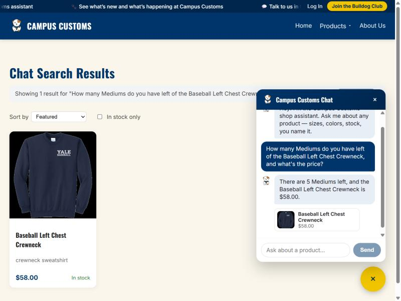
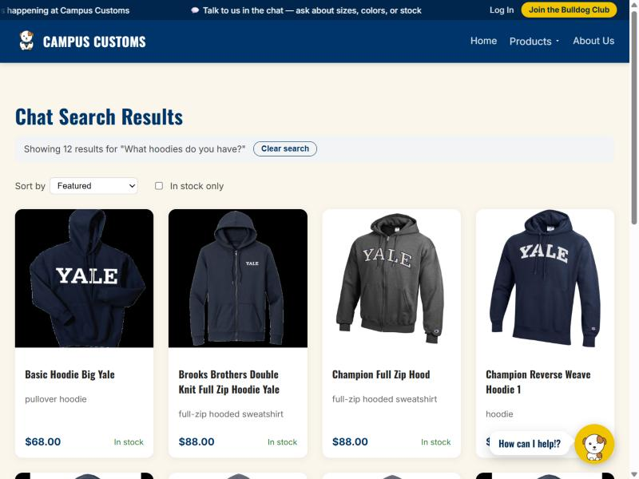
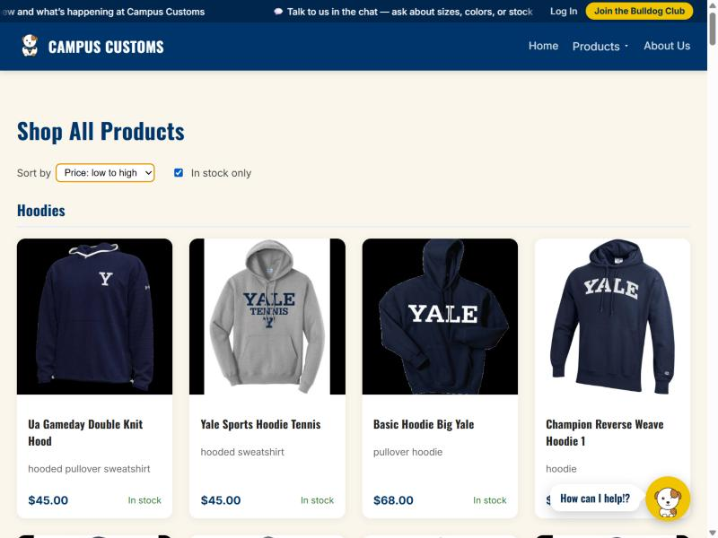

Problem 11: three live checks against the running app (backend on :8000, frontend on :5173), each with a screenshot and what it proves.
Asked the shop assistant for the Medium stock level and price of the Baseball Left Chest Crewneck. Before asking, the database was queried directly for ground truth:
SELECT price FROM catalogue WHERE product_id = 'baseball-left-chest-crewneck' → $58.00SELECT quantity FROM inventory WHERE product_id = 'baseball-left-chest-crewneck' AND size = 'M' → 5

The assistant replied "There are 5 Mediums left, and the Baseball Left Chest Crewneck is $58.00" — an exact match to the database values above, confirming the agent's check_size_stock / get_product tools read live data rather than guessing.
Asked the chat "What hoodies do you have?" — a category/browse question, not a request for one named product.

The chat's reply redirected the page to Products and rendered 12 real product cards ("Showing 12 results for 'What hoodies do you have?'"), pulled live from the catalogue by the agent's search_products tool — proving the chat-to-page dynamic search contract (Problem 7) still works end-to-end.
On the full Products page, set Sort by → Price: low to high and checked In stock only.

The Hoodies section re-ordered to ascending price ($45 → $45 → $68 → ...) with both controls applied, confirming the Problem 9 front-end usability improvement (client-side sort and stock filter) works correctly on the live, category-organized catalogue.